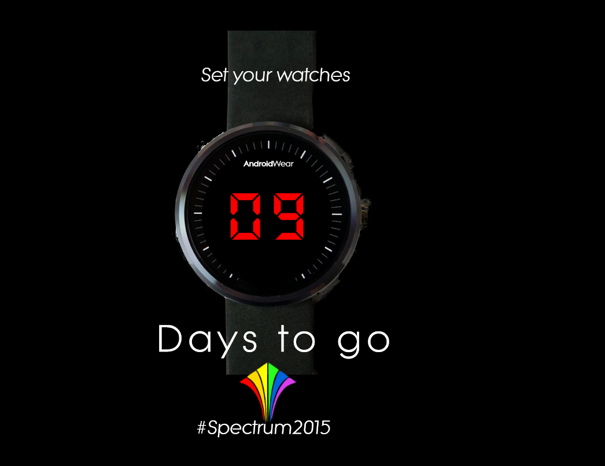
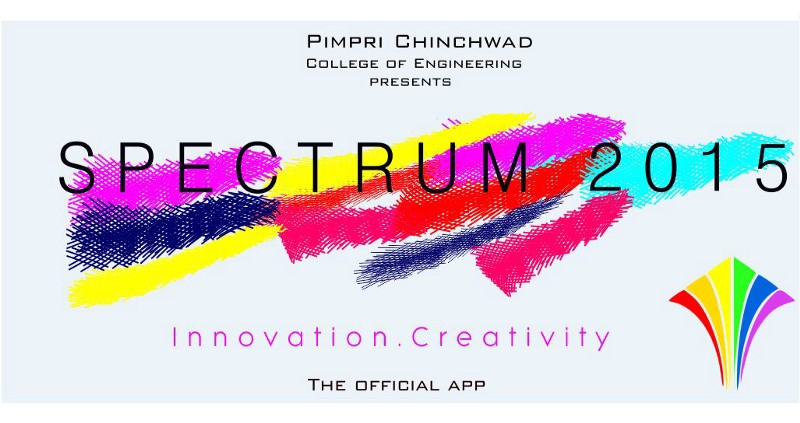
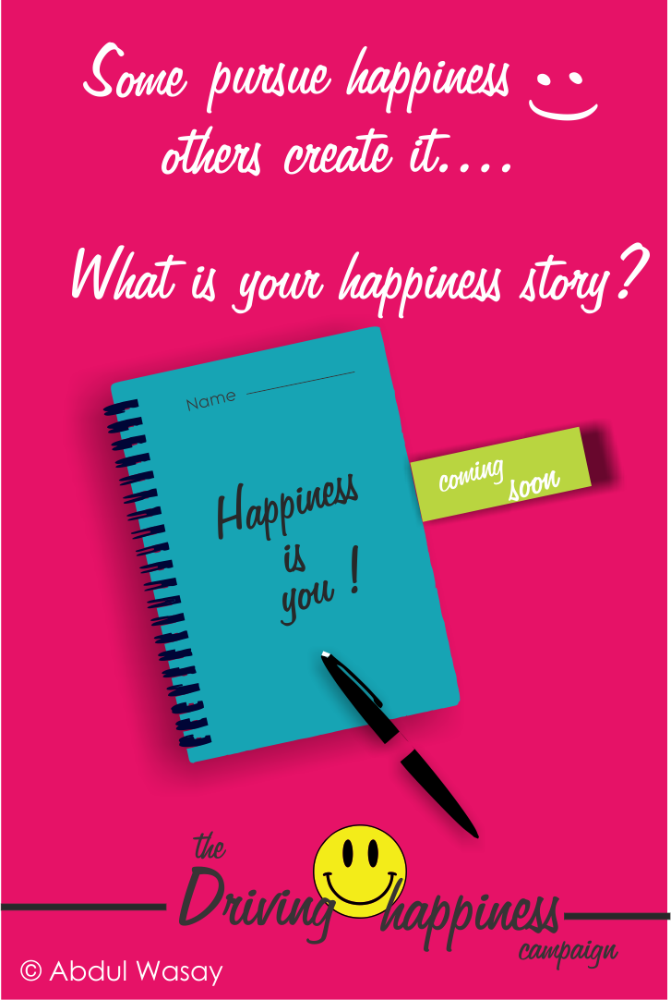
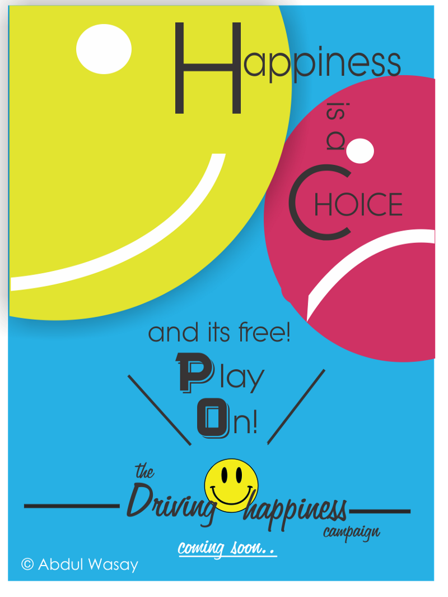
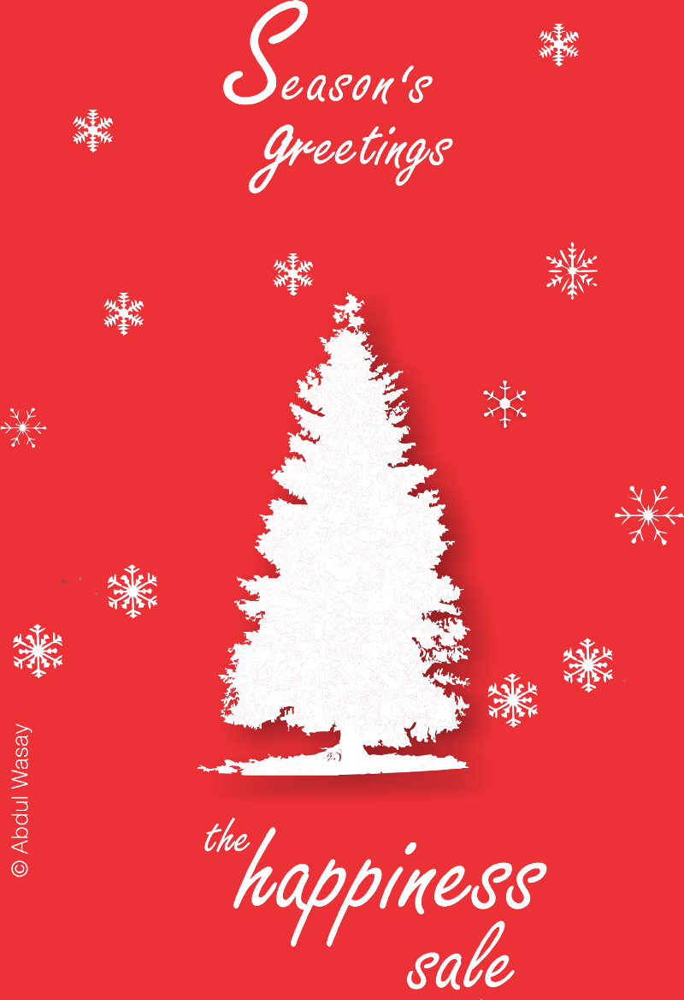
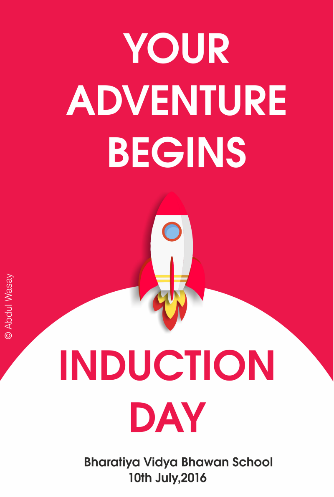
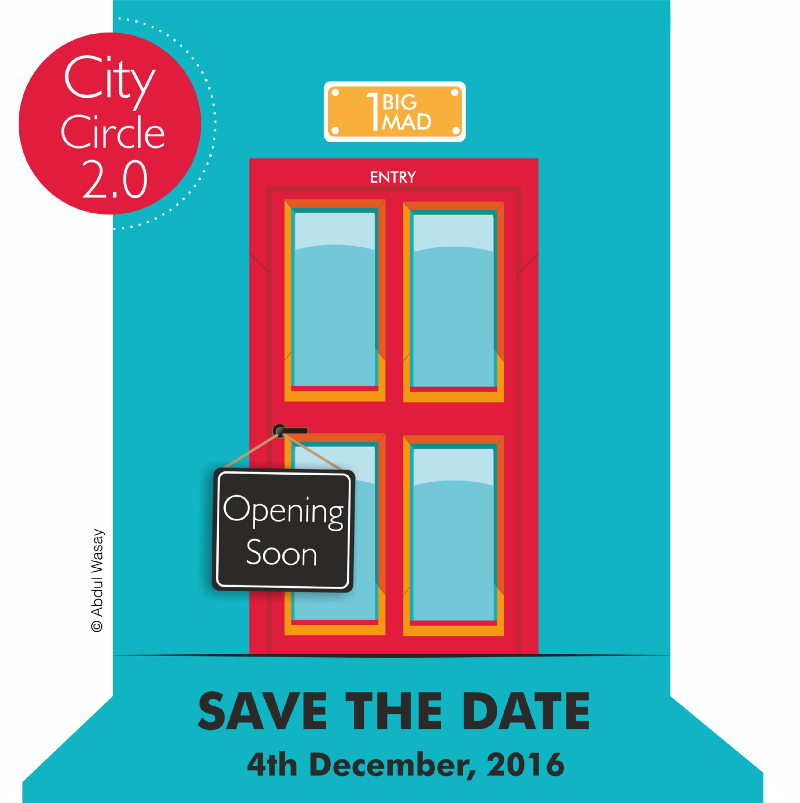
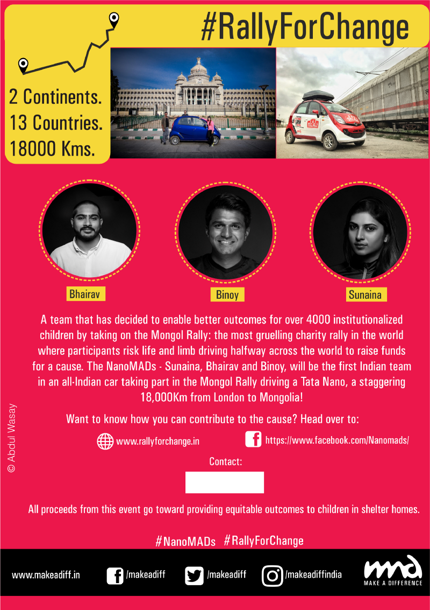
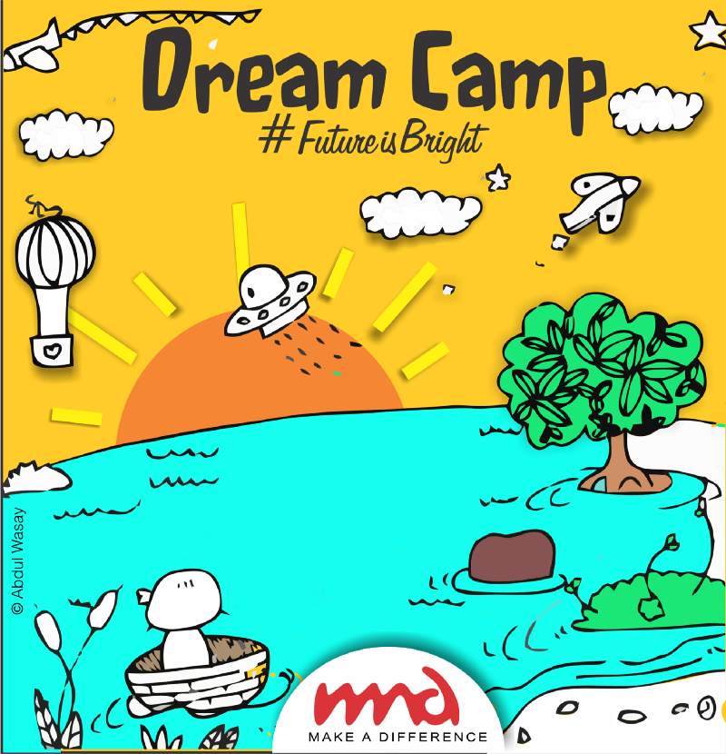

Design has always fascinated me. My uncle is an exhibition designer, he got into design at a time when people in India
had no idea of what it was, growing up around him I was exposed to the depth and the brilliance of the field. I had a
natural inclination towards drawing art but being around him expanded my passion to encompass the filed of design in its
entirety. I gave up drawing art back as a child when I moved to Pune, I simply got too busy trying to fit in, so when an
opportunity to work as a graphic designer was presented to me in my freshman year of college, I took it. It was a
calling I think, which I answered, and now that I look back I am so glad I did.

Android Wear was quite the thing then, so i decided to use that for the countdown poster.
Also went well with the overall technical theme of the event.

This was the cover image for our app on the Play Store. This was a fest put together entirely by students in
their freshmen year. It allowed us to transition into the college culture, get to know each other, make memories and
friendships. That is what the colors represent.
Winter 2015
In the winter of 2015, I received a message from a representative of the Pune Chapter of this organization called Make a
Difference. They were looking for a Graphic Designer and wondered if I would be interested in coming in for an
interview. They had seen the work I had done for Spectrum 2015 and thought I might be a good fit. I agreed. A week later
I was driving down to the venue, little did I know this would turn out to be the best decision I ever made in my college
life.

When I applied for a graphic designer position at MAD, I was given a task which would decide whether I was
suited for the position or not. The task was to design a graphic for a fictional Driving Happiness campaign.This poster
was the one of the two entries. I was accepted :)

This was the second entry
2015 - 2017
Over the 2 years that I worked at Make a
Difference., I produced a ton of designs across varied styles. I can't upload all of them here simply because there are too many, instead, I'll try to upload a few, each of which will touch upon a different aspect of the graphics I produced.

We had a happiness sale for Christmas to raise funds. I designed this poster that we used for publicity.

MAD is a 100% volunteer driven organization at the ground level. I designed this invitation that was sent out to all fresh volunteer recruits for their induction day. Wouldn't be lying if I said my fascination with space technology had a hand in the way this graphic turned out :)

City Circle is Make a Differences' semi-annual volunteer gathering where we re-visit our progress over the previous 6 months and decide the course of action for the next 6 months. There are also a lot of games and activities that take place to increase the camaraderie among volunteers across various teams, this is in line with MAD's saying of all volunteers being part of "One Big MAD" family.

This was a flyer that I designed for Team NanoMADs' attempt at the Mongol Rally to raise $1 million for helping children realize equitable outcomes across shelter homes in India through MAD. This design was used nationally. You can learn more about this incredible initiative through the short video here.

Dream Camp is an annual MAD event where we take the kids on a weekend outing. This graphic was part of the fundraising campaign. This was actually a hand-drawn doodle (drawn with a pencil) that I colored digitally.